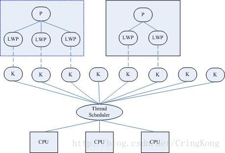

多年前写过一篇文章ThreadPool 之学习 。彼时有点拾人牙慧，生吞活剥的意思。现在觉得自己对于线程理解较之以往稍微深入一点了，于是想再谈谈 Java 的线程池。
我们不妨从本源说起，什么是线程，在 Java 中线程又是什么。
Thread 什么是 Thread？
维基百科给出的解释是：
线程是操作系统能够进行运算调度的最小单位。它被包含在进程之中，是进程的实际运作单位，一条线程是指进程中的单一顺序控制流。
用户空间的线程 关于用户空间和内核空间后面会专门写文章探讨，此处暂且不表。
简单讲，用户空间中的线程对于CPU来讲是透明的，因为CPU看到的只是进程，而用户空间中的线程是在进程里面实现的，所以并不会单独对进程中的线程做调度。
既然内核不为线程实现调度，那只能在用户空间实现了。
这种方案减少了用户态到内核态的切换，但是因为内核看不到进程中的线程，所以如果进程中有线程因为请求资源而阻塞，此时整个进程都会阻塞，如果进程中还有其他线程，则不会得到调用。
内核空间的线程 在内核空间中的线程，内核负责完成线程的切换。内核通过线程调度器对线程进行调度。内核已经搞定了线程的一切（创建、销毁、调度），只需要使用系统调用就行。
轻量级进程（LWP） 轻量级进程建立在内核之上，是由内核支持的用户线程。每个轻量级进程与一个特定的内核线程关联。关系如图。

这种轻量级进程与内核线程之间的1：1的关系称为一对一的线程模型。
Java 线程 JDK1.2之前，程序员们为JVM开发了自己的一个线程调度内核，在 OS 层面就是前面提到的用户空间内的线程实现；JDK1.2之后，JVM选择了操作系统原生的线程模型，通过系统调用完全交给操作系统内核进行调度。
也就是说现在 Java 中的线程本质就是 OS 中的线程。
所以，ThreadPool 之学习 这篇文章提到的创建线程的开销较大，就是针对此而言，因为要创建内核线程。
ThreadPool 设计与实现 ThreadPool 之学习 介绍了 ThreadPool 调用API的相关方面，此处将从设计思路方面分析 ThreadPool 是如何实现的。
Task 提交到线程池中任务的抽象，体现为 Runnable 接口，或者 Callable 接口。
State
五种状态的转化关系如图所示：
从以上状态可以看出：只有处于 RUNNING 状态时，才可以处理新提交的任务，其它状态下的区别就是处不处理队列中积压的任务而已。
Queue 任务队列。Task 会排到任务队列中，Worker 线程从队列中循环取任务并且执行。
Worker 顾名思义，就是在线程池中负责“干活”的。他们的任务上面已经提到了。他们的数量会根据参数的不同设置而定。
Task 如何提交 每一个任务以 Runnable 或者 Callable 的形式提交。
如果线程池中的 worker 线程数少于 corePoolSize，start 一个新 Thread，并将此任务作为该线程的第一个任务。
如果线程池中的 worker 线程数大于等于 corePoolSize，就将该任务排到阻塞队列中
排队成功
等待 worker 线程从队列中取任务执行
排队失败
池中总线程数小于 maximumPoolSize
start 一个新 Thread，并将该任务作为该线程的第一个任务
池中总线程数大于等于 maximumPoolSize
执行拒绝策略
ctl ThreadPoolExecutor 中一个关键的整型变量 ctl，同时代表了线程池的状态和线程池中 Worker 数。
一个整型变量在 Java 中是 4 个字节，共有 32 位，而线程池的状态为 5 种，所以取 3 位表示足矣，而剩下的 29 位就可以表示线程池中的 Worker 线程数，示意图如下：
成员变量表示如下：
1 2 3 4 5 6 7 8 9 private static final int COUNT_BITS = Integer.SIZE - 3 ;private static final int CAPACITY = (1 << COUNT_BITS) - 1 ;private static final int RUNNING = -1 << COUNT_BITS;private static final int SHUTDOWN = 0 << COUNT_BITS;private static final int STOP = 1 << COUNT_BITS;private static final int TIDYING = 2 << COUNT_BITS;private static final int TERMINATED = 3 << COUNT_BITS;
CAPACITY 的二进制表示为 29 个 1；
-1 在计算机中的二进制表示为全1，所以 RUNNING 的二进制表示为：111（高三位） + 000…0000（低29位），整理如下：
变量
高3位
低29位
RUNNING
111
000…0000
SHUTDOWN
000
000…0000
STOP
001
000…0000
TIDYING
010
000…0000
TERMINATED
011
000…0000
CAPACITY
000
111…1111
如果想取一个线程池的状态，只要执行如下操作即可。
1 2 private static int runStateOf (int c) return c & ~CAPACITY; }
如果想取一个线程池的 worker 数，执行如下操作：
1 private static int workerCountOf (int c) return c & CAPACITY; }
有了以上基础，就不难理解下面代码中的一些判断了。
1 2 3 4 5 6 7 8 9 10 11 12 13 14 15 16 17 18 19 20 21 22 23 public void execute (Runnable command) if (command == null ) throw new NullPointerException(); int c = ctl.get(); if (workerCountOf(c) < corePoolSize) { if (addWorker(command, true )) return ; c = ctl.get(); } if (isRunning(c) && workQueue.offer(command)) { int recheck = ctl.get(); if (! isRunning(recheck) && remove(command)) reject(command); else if (workerCountOf(recheck) == 0 ) addWorker(null , false ); } else if (!addWorker(command, false )) reject(command); }
以上算是执行任务的整个流程进行了粗线条的描述。
注意到上面多次用到了 addWorker 这个方法来增加线程池中的 Worker 数，下面就来详细分析下具体是怎么添加的。
先用伪代码进行描述：
1 2 3 4 wc++;//wc 为线程池中 Worker 数 w = new Worker() //创建 Worker workerSet.add(w) //添加到 WorkerSet 中 start thread in worker
在代码实现中，上述代码分为两段：
第一段，在循环中使用 CAS 的方式更新 wc 的值加 1。
1 2 3 4 5 6 7 8 9 10 11 12 13 14 15 16 17 18 19 20 21 22 23 retry: for (;;) { int c = ctl.get(); int rs = runStateOf(c); if (rs >= SHUTDOWN && ! (rs == SHUTDOWN && firstTask == null && ! workQueue.isEmpty())) return false ; for (;;) { int wc = workerCountOf(c); if (wc >= CAPACITY || wc >= (core ? corePoolSize : maximumPoolSize)) return false ; if (compareAndIncrementWorkerCount(c)) break retry; c = ctl.get(); if (runStateOf(c) != rs) continue retry; } }
在第二部分，将 Worker 加入到 WorkerSet 中之后，就调用 Worker 中 Thread 的 start 方法开启线程了。
1 2 3 4 5 6 7 8 9 10 11 12 13 14 15 16 17 18 19 20 21 22 23 24 25 26 27 28 29 30 31 32 33 34 35 36 37 boolean workerStarted = false ;boolean workerAdded = false ;Worker w = null ; try { w = new Worker(firstTask); final Thread t = w.thread; if (t != null ) { final ReentrantLock mainLock = this .mainLock; mainLock.lock(); try { int rs = runStateOf(ctl.get()); if (rs < SHUTDOWN || (rs == SHUTDOWN && firstTask == null )) { if (t.isAlive()) throw new IllegalThreadStateException(); workers.add(w); int s = workers.size(); if (s > largestPoolSize) largestPoolSize = s; workerAdded = true ; } } finally { mainLock.unlock(); } if (workerAdded) { t.start(); workerStarted = true ; } } } finally { if (! workerStarted) addWorkerFailed(w); }
下面我们再看看在 Worker 的 run 方法里面的执行逻辑。
1 2 3 4 5 6 7 8 9 10 11 12 13 14 15 16 17 18 19 20 21 22 23 24 25 26 27 28 29 30 31 32 33 34 35 36 37 38 39 40 41 42 43 44 45 46 47 public void run () runWorker(this ); } final void runWorker (Worker w) Thread wt = Thread.currentThread(); Runnable task = w.firstTask; w.firstTask = null ; w.unlock(); boolean completedAbruptly = true ; try { while (task != null || (task = getTask()) != null ) { w.lock(); if ((runStateAtLeast(ctl.get(), STOP) || (Thread.interrupted() && runStateAtLeast(ctl.get(), STOP))) && !wt.isInterrupted()) wt.interrupt(); try { beforeExecute(wt, task); Throwable thrown = null ; try { task.run(); } catch (RuntimeException x) { thrown = x; throw x; } catch (Error x) { thrown = x; throw x; } catch (Throwable x) { thrown = x; throw new Error(x); } finally { afterExecute(task, thrown); } } finally { task = null ; w.completedTasks++; w.unlock(); } } completedAbruptly = false ; } finally { processWorkerExit(w, completedAbruptly); } }
可以看到，核心代码为 task.run() 。注意此时是直接调用 Runnable 的 run() 方法，而不是 start 了，因为如果是该 Runnable 任务已经在一个线程里了，所以可以直接执行，而不是调用 start 方法，等待 CPU 调度。
以上，算是对从任务提交到线程池到执行的一个粗略分析。还有很多细节，有待继续深入研究。
shutdown 以上分析了任务是如何提交的，这一部分分析一下，线程池是如何关闭的。
1 2 3 4 5 6 7 8 9 10 11 12 13 public void shutdown () final ReentrantLock mainLock = this .mainLock; mainLock.lock(); try { checkShutdownAccess(); advanceRunState(SHUTDOWN); interruptIdleWorkers(); onShutdown(); } finally { mainLock.unlock(); } tryTerminate(); }
先看如何更新线程池的状态：
1 2 3 4 5 6 7 8 9 10 11 12 13 14 private void advanceRunState (int targetState) for (;;) { int c = ctl.get(); if (runStateAtLeast(c, targetState) || ctl.compareAndSet(c, ctlOf(targetState, workerCountOf(c)))) break ; } } private static boolean runStateAtLeast (int c, int s) return c >= s; }
如何中断闲置 Worker：
1 2 3 4 5 6 7 8 9 10 11 12 13 14 15 16 17 18 19 20 21 22 23 24 25 26 27 private void interruptIdleWorkers () interruptIdleWorkers(false ); } private void interruptIdleWorkers (boolean onlyOne) final ReentrantLock mainLock = this .mainLock; mainLock.lock(); try { for (Worker w : workers) { Thread t = w.thread; if (!t.isInterrupted() && w.tryLock()) { try { t.interrupt(); } catch (SecurityException ignore) { } finally { w.unlock(); } } if (onlyOne) break ; } } finally { mainLock.unlock(); } }
再看看更为暴力的 shutdownNow 方法：
1 2 3 4 5 6 7 8 9 10 11 12 13 14 15 16 17 public List<Runnable> shutdownNow () List<Runnable> tasks; final ReentrantLock mainLock = this .mainLock; mainLock.lock(); try { checkShutdownAccess(); advanceRunState(STOP); interruptWorkers(); tasks = drainQueue(); } finally { mainLock.unlock(); } tryTerminate(); return tasks; }
重点看下 interruptWorkers 方法，注意此方法是将所有已经开启的 Worker 线程 都干掉。
1 2 3 4 5 6 7 8 9 10 private void interruptWorkers () final ReentrantLock mainLock = this .mainLock; mainLock.lock(); try { for (Worker w : workers) w.interruptIfStarted(); } finally { mainLock.unlock(); } }
该方法又调用了 Worker 类的 interruptIfStarted 方法：
1 2 3 4 5 6 7 8 9 10 void interruptIfStarted () Thread t; if (getState() >= 0 && (t = thread) != null && !t.isInterrupted()) { try { t.interrupt(); } catch (SecurityException ignore) { } } }
该方法就是要将所有已经在阻塞队列中的任务移除。
1 2 3 4 5 6 7 8 9 10 11 12 13 private List<Runnable> drainQueue () BlockingQueue<Runnable> q = workQueue; ArrayList<Runnable> taskList = new ArrayList<Runnable>(); q.drainTo(taskList); if (!q.isEmpty()) { for (Runnable r : q.toArray(new Runnable[0 ])) { if (q.remove(r)) taskList.add(r); } } return taskList; }
（全文完）
参考资料
Java线程和操作系统线程的关系 《深入理解计算机系统（第二版）》
《Java并发编程实战》
Java线程池ThreadPoolExecutor源码分析